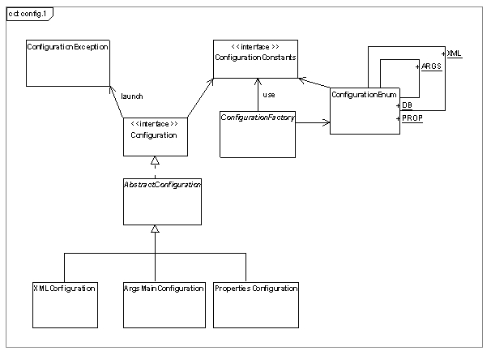

Ce package fournit plusieurs implémentations de Configuration accessible via une ConfigurationFactory . La méthode createConfiguration prendra en argument un chemin vers un fichier, accessible via le programme appelant. C’est l’extension du fichier qui déterminera l’implémentation à utiliser. L’association entre l’extension du fichier et l’implémentation à utiliser est définit dans le fichier ConfigurationEnum.
Actuellement les extensions suivantes sont utilisées :
Il existe une autre implémentation ArgsMainConfiguration, permettant de charger une instance de configuration via les arguments donnés à une méthode main.
Ce package fournit plusieurs implémentations accessible via une ConfigurationFactory . La méthode createConfiguration prendra en argument un chemin vers un fichier, accessible via le programme appelant. C’est l’extension du fichier qui déterminera l’implémentation à utiliser. L’association entre l’extension du fichier et l’implémentation à utiliser est définit dans le fichier ConfigurationEnum.
Actuellement les extensions suivantes sont utilisées :
Il existe une autre implémentation ArgsMainConfiguration, permettant de charger une instance de configuration via les arguments donnés à une méthode main.
Exemple de clé, pour accéder de manière unifiée au valeur d'une propriété :
Exemple de fichier de configuration : "app.properties"
application.name=app application.version=1.0.0 application.description=description of the application... application.date=2006-09-01 application.librairies=dom4j.jar log4j.jar mail.jar application.modules.sales=Sales application.modules.sales.version=1.1.0 application.modules.marketing=Market. application.modules.netbusiness=
Exemple de programme java
Configuration config = ConfigurationFactory.createConfiguration("app.properties");
config.load();
System.out.println(config.getString("//application/name"));
System.out.println(config.getString("//application/version"));
System.out.println(config.getDate("//application/dateMaj"));
System.out.println(config.getString("//application/modules/sales/version"));